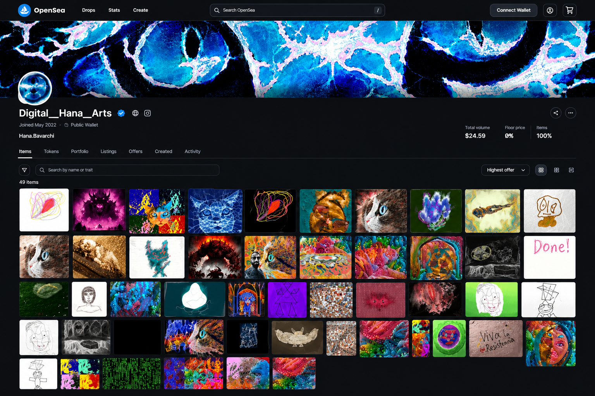

◈
अंकीय कला
जनक-प्रणालियाँ, कलन-विधि कला, गणनात्मक छायाचित्रण, और प्रयोगात्मक अंकीय माध्यम।
कला और कलन-विधि के बीच, डेटा और स्वप्न के बीच, बुद्धि और सहज-बोध के बीच — डी.एच.ए. स्याही-शून्य में विचरण करता है।
डिजिटल हन्ना आर्ट्स एक प्रयोगात्मक गणनात्मक-सृजनशीलता की कार्यशाला है, जो तकनीक और कलात्मक अभिव्यक्ति के बीच के अन्तराल-स्थल पर चलती है।
हम सॉफ़्टवेयर, दृश्य-प्रणालियाँ, मशीन-अधिगम के प्रयोग, डेटा-चालित कला, और ब्लॉकचेन-उन्मुख अंकीय परिसम्पत्तियाँ रचते हैं — और इन सब के मूल में उत्तर-मानवीय संवेदना है।
हमारा मूल प्रश्न सरल नहीं है: जब गणना सृजन का माध्यम बने, तब क्या होता है?
डी.एच.ए. किसी एक तकनीकी श्रेणी में नहीं, बल्कि विद्याओं के पार कार्यरत है। यह वियोजित जाल है।
जनक-प्रणालियाँ, कलन-विधि कला, गणनात्मक छायाचित्रण, और प्रयोगात्मक अंकीय माध्यम।
डेटा-खनन, विश्लेषण, दृश्यांकन, सांख्यिकीय गणना, और डेटा-चालित खोज।
मशीन-अधिगम, गहन-अधिगम, संगणक-दृष्टि, और जनक कृत्रिम बुद्धि।
एन.एफ.टी., अंकीय परिसम्पत्तियाँ, श्रृंखला-विश्लेषण, और विकेन्द्रित सृजन-पारिस्थितिकी।


यह एक ब्लॉकचेन शोध एवं अभियांत्रिकी मंच है — जो प्रयोगशाला-विज्ञान, विकेन्द्रित संरचना, और प्रमाण्य गणना को एक सूत्र में पिरोता है।

जूलिया पर आधारित एक गणनात्मक-कला मंच, जो यह खोजता है कि छायाचित्र किस प्रकार प्रतिबिम्ब-प्रसंस्करण, मशीन-अधिगम और जनक-प्रणालियों से गुज़र कर नए अंकीय कलाकृतियों में बदल जाते हैं।

ओपनसी पर डिजिटल हन्ना आर्ट्स का आधिकारिक संकलन देखें — चयनित अंकीय परिसम्पत्तियाँ, जनक कलाकृतियाँ, और श्रृंखला-आधारित सृजन।
डिजिटल हन्ना आर्ट्स का नाम "हन्ना" पर पड़ा — दृश्य-पहचान के हृदय में बैठी एक बिल्ली के बच्ची।
उसकी उपस्थिति इस गणनात्मक संसार में जान-बूझकर कुछ जैविक और मानवीय घोलती है: जिज्ञासा, व्यक्तित्व, चरित्र।